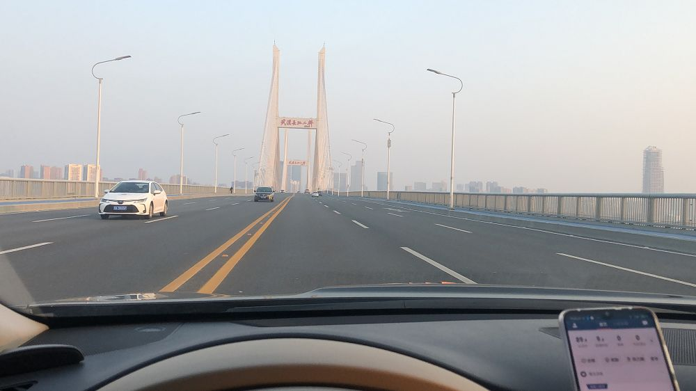
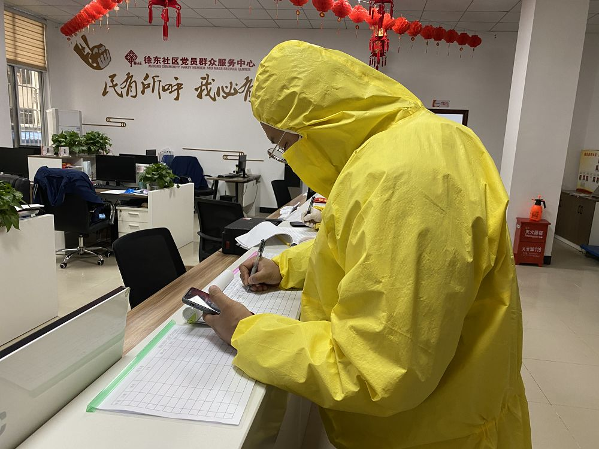
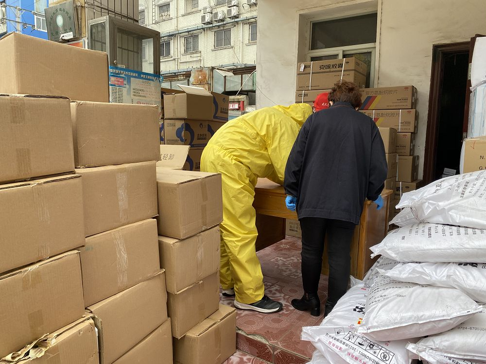
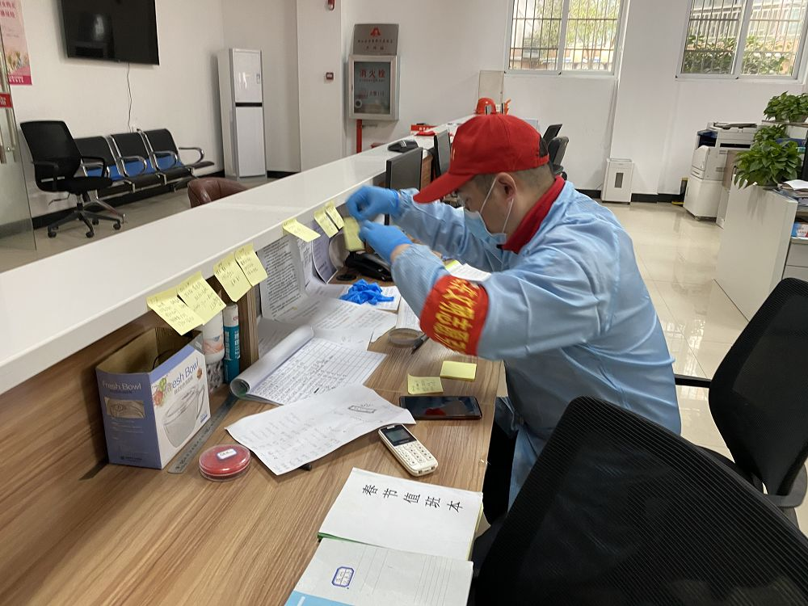
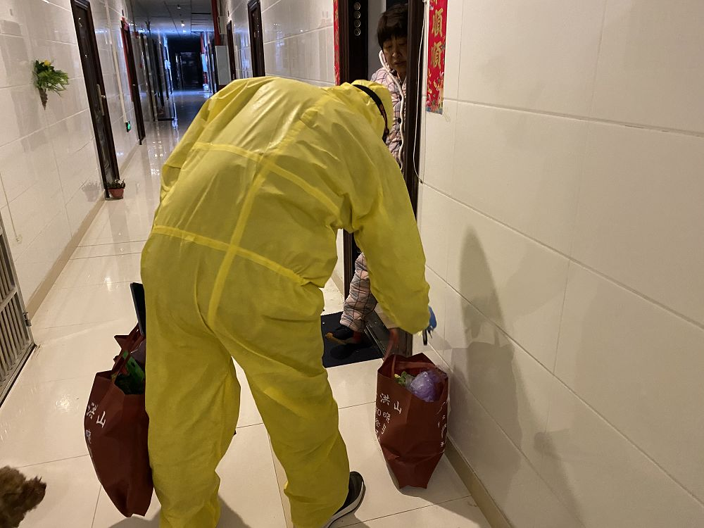
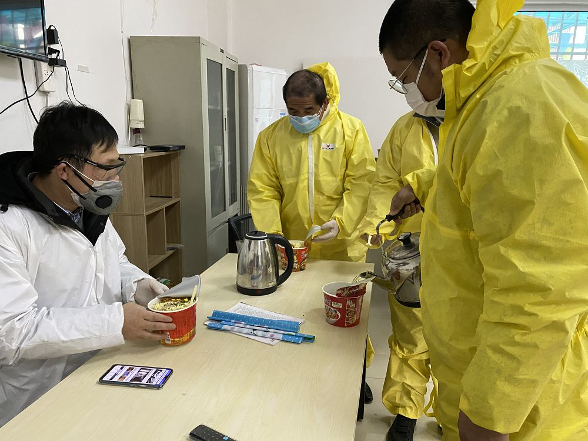

封城10日，武汉人的自救行动
原文链接 备份链接 数据来源：腾讯新冠肺炎疫情实时追踪 截至2月3日早上7时， 全国新冠肺炎确诊个案16615例， 武汉确诊个案5142例。 根据1月31日湖北省疫情新闻发布会， 截至30日24时， 武汉地区共有6万余名医务工作者参与救 …

武汉春寒料峭，疫情仍在蔓延。但也因为抗击疫情，本不相识的司机和医生之间，达到了前所未有的默契。“谢谢”和“加油”，是他们每次相遇和分开的标记
文 |《财经》特派武汉记者 刘以秦 编辑 | 谢丽容

图1: 在路上的爱心司机 刘以秦/摄
2月2日早上6点，武汉还笼罩在晨曦中，杜川已经准备出发。他是一名滴滴专车司机，今天的第一个“订单”，是要送一名医生去上班。
杜川在滴滴平台上接的最后一个日常订单，是1月24日晚上，一位医生下班回家叫的车。这位医生乘客告诉他，主要的交通出行工具都停了，最难的就是他们，居民们可以继续休假，或在家隔离，医护人员必须天天到岗，轮番值班。
医生预约的出发时间是早上7点半，杜川7点就赶到了社区服务中心门口，他还需要给车辆进行全面消毒，然后拍照、打卡。
1月23日，武汉禁止私家车出行；1月24日，滴滴平台在武汉暂停出行服务；1月25日，滴滴召集1336名网约车司机，组建“社区保障车队”，交由社区统一调配。同时，滴滴组织200多名司机，成立“医疗保障车队”，专门提供医护人员出行服务。
杜川是最早加入社区保障车队的“爱心司机”。他是武汉本地人，当过兵，退伍后给一位企业老板当司机。后来企业倒闭，他就做了滴滴的专车司机。
交通是一座城市的血脉，负责连接城市的每个角落。根据公开数据，截止2019年底，中国汽车保有量2.6亿辆，30个城市的汽车保有量超过200万辆，武汉也是其中之一，约300万辆。
武汉还有10条地铁线路以及超过400条公交线路，还有极具城市特色的过江轮渡。不过，在疫情全面爆发后，武汉这些城市纽带纷纷暂停。
像杜川一样的上千名“爱心司机”，重新接过了支撑武汉这个超级城市维持基本运转的接力棒，为武汉抗击疫情提供最基础的保障。他们不计回报，以身犯险，希望能为疫情好转贡献一些个人力量，当然也并不是没有回报。2月2日这一天，《财经》记者在武汉跟踪报道，杜川收到最多的一句话就是：“谢谢，辛苦了。”

图2: 司机杜川正在做车辆的消毒通风工作 刘以秦/摄
2月2日早上7点30分：都是好消息
今天的第一站是中部战区总医院汉口院区，杜川送一名医生去上班。这位医生第一次使用社区保障车队的服务，此前由于交通管制，他只能找同事帮忙接送。
平日里，这个时间是武汉的早高峰，但今天的武汉，路上行驶的车辆少得可怜，一路畅通无阻。
医生乘客并不在一线，在二线待命，准备随时上战场。他告诉《财经》记者，医院的物资非常紧张，他们作为二线医务人员，使用的都是一些简易防护装备，专业的物资都省下来留给一线的同事们。
医生还来带一个好消息，他了解到的数据是，目前武汉市新冠肺炎的重症患者数量并不多，他在几天前了解到的数据大约是500-600位，大部分患者还属于轻症，最新的数据还未拿到。
送达目的地后，杜川希望在滴滴的平台上再接订单。滴滴在App中上线了一个新功能，一线医院的医护人员开放了在滴滴上叫车的权限。不过一直没有新订单出现，杜川说，早班的医生都很早去上班，这个点应该都已经到医院了，“只要是医护人员发的订单，都会被立刻抢走，大家都特别积极。”
他选择返回社区，在社区门口他发现了意外惊喜——一家早餐店开门营业了。杜川停好车，买了一份武汉人最爱的本地小吃“热干面”，并在他司机工作群里通知大家，可以出来吃热干面了。
他快速吃完，“吃了10天的方便面了，吃一碗热干面太舒服了。”
杜川已经很久没有好好吃一顿饭了。过年前，他的老婆孩子就先回了老家黄陂，他想再拉几天活再回去，没想到等来的是武汉封城的消息。除夕夜，他一个人在家吃的年夜饭，吃的都是咸鱼、酱牛肉等半成品，后来加入社区车队后，每天主要食物供应就是方便面。

图3: 杜川正在社区服务中心登记签到，领取需求 刘以秦/摄
难得这么早结束，杜川回到社区服务中心。社区工作人员请他去街道处领取物资，是用于疫情指导工作的横幅，他立刻赶过去，又收获了第二个好消息。
街道处的工作人员告诉他，今天刚刚到了一批蔬菜和医疗物资，包括口罩，消毒液等，他可以现在就签字领走。
杜川很高兴，立刻开车进去搬运物资。医疗物资的定量的，每种三箱，蔬菜则是“随便拿，能装上都运走”，一大包大白菜有12颗，加起来至少有60斤，杜川搬的有些费劲，一会儿工夫，他的防护服里都是水汽。
回到社区，社区工作人员给杜川发了一批新的物资，包括口罩和消毒酒精。这些曾经都是价格便宜的常见物资，今天变成了抢手货。由于没有专用分装瓶，消毒酒精都装在矿泉水瓶里，杜川提醒其他爱心司机，“不要弄混了当成矿泉水，回头变成酒驾了。”
上午9点，另一名爱心司机前往街道处领取剩余的物资，赶到时，现场已经排满了各个社区来的车辆，由于等待时间较长，现场发生了争执。有人大声抱怨领取流程混乱，因为不知道是要先车排队还是人排队，排了队又被告知没有还没有签名。工作人员也很无奈，只好不停的道歉，“大家情绪都不好，相互理解一下可以吗？”
这位爱心司机是湖北襄阳人，之前自己做生意，生意失败后选择做滴滴司机，他告诉《财经》记者，感觉现在武汉和以前没有什么变化，“现实情况其实没有大家说的那么可怕，就是每天喷消毒水，车子的座椅都有点被腐蚀了。”

图4: 领取街道处的物资 刘以秦/摄
2月2日上午9点20分：着急的病人
乐观并不能掩盖今天武汉社区已经大变样的事实。9点20分左右，杜川返回社区，看到几名发热病人来到社区服务中心，要求社区派车送去医院就诊，但是社区保障车队并不具备运送发热病人的防护能力。这些司机自1月25日至今，只有一件简易防护服，一直没更换过。
病人很委屈，已经发烧多日，但无法去医院，他们表示如果今天不能送去医院，就坐在社区办公室不走了。社区工作人员帮忙拨打120，被告知目前所有120急救车都已经派出去了，随后又拨打110，110询问具体情况后表示，他们也很忙，暂时抽不出时间过来。
社区工作人员只能好言相劝，告诉病人已经登记并会马上上报，有消息了会第一时间通知，病人最终选择了回家。
社区工作人员告诉《财经》记者，每天都有这样的情况发生，他们每天会接到100多个居民求助电话，要求就诊，但是“我们确实没有办法，也没有能力。”

图5: 社区工作人员正在整理每天的通车需求 刘以秦/摄
一位社区工作人员拿出两只3M口罩送给《财经》记者，“一定要拿，不能一个口罩戴一天！”但记者发现，他们自己戴的还是普通的医用口罩。因为一些物资不足，他们的口罩其实很紧缺。而且，社区人来人往，还时不时有发热病人来，做好防护工作，对他们来说同样重要。
疫情发生后，人们的注意力集中在新冠肺炎上，大量医院都开设发热门诊，或是将病房改造成隔离病房，提供给不断上升的感染病人。但在社区还有大量其他病患，他们也需要去医院就诊，或是做例行的治疗、检查，当一切医疗资源都向新冠肺炎倾斜时，他们的看病难问题，鲜少有人关注。
爱心司机们每天最主要的工作之一，就是接送社区内去医院做透析的病人。做一次透析需要4个小时。有时需要很早出发，去医院占透析的设备；有时会等到很晚，到半夜12点、1点才能结束。
杜川的住处离社区最近，他也是社区车队的小队长，有一些苦活累活他会尽量自己解决，例如早上6点和晚上12点后需要用车的，尽量自己来。其他司机也挺佩服他，“队长不容易，既要干活，还要组织协调我们，有什么事他都冲在第一个。”
一位司机开玩笑说，“不愧是领导啊！”
上午10点50，社区工作人员整理好要配送给居民的物资，送去附近的一个小区，杜川接到任务，立刻出发。
这个小区是商住房，小区环境相对复杂，一层楼就有几十户，杜川找了很久，提前电话联系居民，其中一位居民的具体地址他绕了两圈也没能找到，对方表示可以下楼来拿。另外两位居民目前都不在家中，希望杜川可以将物资放在物业的办公室。

图6一些居民楼地形复杂，一层有几十家住户 刘以秦/摄
但是物业并不愿意接收，特殊时期，所有人都希望减少与外界的接触。物业的工作人员态度不太好，提出必须住户自己接收，杜川在物业处等了十几分钟，才将物资送到住户手里。
这让杜川觉得有些无奈，但他可以理解。他叮嘱《财经》记者，一定不要触碰任何小区内的东西，包括门把手、电梯按键，与住户要保持具距离。他用脚开门，用车钥匙按电梯，所有物资都放在门口，让居民自己开门出来拿。
回到车里，杜川给自己做了个简单的消毒。外面下起小雨，气温开始下降。他说，可以回去吃午饭了。

图7: 杜川上门配送给居民 刘以秦/摄
2月2日下午2点：源源不断的求助
社区的一间简易的休息室里，随意摆放了一些桌椅，没有空调和暖气，外面还在下雨，气温越来越低，这是司机们吃午饭的地方。
对于午饭，也并不是完全没有选择——吃辣的还是不辣的？武汉人杜川自然要选择辣的，“天气这么冷，一碗辣的泡面刚刚好。”
午饭期间，司机师傅们坐在一起交流对疫情的感受，包括听到的各种传闻。襄阳籍的司机说，现在对武汉也有了感情，希望武汉赶快好起来。
另一位司机感叹道，现在感觉不戴口罩的日子太幸福了，“哪一天不用戴口罩了，就心满意足了。”
午饭后，他们会在车里稍作休息，吃饭的地方四面漏风，太冷；社区办公室里人多，他们穿着防护服怕居民恐慌。但是在车里也不敢睡觉，温度太低，怕感冒。

图8: 爱心司机的午餐时间 刘以秦/摄
杜川在午休时间会持续关注各种车辆调度信息，如果暂时没有安排，他会打一把“吃鸡”，放松一下。
但对面的社区工作人员还不能午休，各路求助电话源源不断的进来，一位80岁的空巢老人打电话来，说已经烧到38度，没能做核酸检测，要求社区派车去送。社区工作人员希望老人提供子女的联系方式，来协助处理，但老人拒绝提供，也不说是为什么。
没一会儿，社区里又进来一位年轻女性，她希望预约明天的用车，她的妹妹在协和医院当护士，想煲一碗汤送过去，虽然医院都有工作餐，但她担心妹妹营养跟不上。
社区人员表示，偶尔送几次可以，但是不能天天送，因为司机和车辆资源有限，不要浪费。
这句话让年轻女士立刻崩溃，“怎么能说是浪费！我妹妹在一线，你知不知道她们有多辛苦！”
社区人员告诉《财经》记者，他们也很难办，事情确实太多，像这些还都是合理的需求，可以尽量满足，还有一些他们都不知道如何回应。
例如，有住户打电话来，要求工作人员上门喂狗喂猫，还有住户要求立刻送一节5号电池上门。前两天，一名住户进来，想领取口罩，工作人员免费给了他一些医用口罩，他转头就投诉称，社区提供劣质口罩。
“我们自己都是用这个口罩，怎么就是劣质口罩了。”一位社区工作人员委屈的说道。
2月2日下午4点半：晚班的医护人员出发了
今天是星期天，“封城”之后，星期几已经显得不那么重要，去医院做透析的病人明显少了许多。对于在一线的医护人员来说，依然是继续战斗的一天。
下午4点半，一名护士乘车前往梨园医院，梨园医院是湖北省老年病医院，现在也是发热定点医院之一。这位护士已经连续几天都预约使用社区保障车，她觉得很开心，封城的最初几天她只能骑共享单车上班，虽然梨园医院距离小区大约4.5公里，冬天气温低，如果遇到下雨天，还是很麻烦。
今天是晚班，她就在隔离病房工作，梨园医院已经收治了几十名确诊新冠肺炎的患者，院长也已经被确诊感染住院了。
她告诉《财经》记者，目前病房已经全部住满，但是每天还是有大量的发热病人来门诊挂号看病，“大部分病人都挂不到号。”
梨园医院的物资情况同样紧张，护士乘客提到，一次值班时间是8小时，按照规定，4小时就需要更换一次防护服，但是现实做不到，她们只能坚持一套装备8小时。
由于病房紧张，本来应该应该一名病患一间病房，便于隔离，但现在也只能2-3名病患一间病房。《财经》记者了解到，一些定点医院已经收治6名病患一间病房。
“只能是让病患24小时戴好口罩，”护士乘客说道，“但好消息是，我们正在加紧改造其他几个病区，争取可以开放更多床位出来。”
护士下车离开，送这一趟的司机师傅感叹，“我们接送了很多护士，都是年轻的小姑娘，都在一线，真的不容易。”
下午6点，杜川要接送一名病人去医院做透析，结束的时间是晚上11点30分，将病人送到医院后，他返回家中，给自己做了顿饭，休息了一会儿。
11点，他重新穿上防护服，戴好口罩和护目镜，出发去医院接病人回家，一天的工作终于接近尾声。回到家中，他还需要给防护服做全面的消毒工作，这件防护服已经使用9天，布满皱褶，但在没有新物资到达之前，它还需要陪伴他穿越疫区，护送下一位乘客和下一批物资。
新冠肺炎疫情还在持续，所有人的目光都注目着武汉。像杜川这样的爱心司机数量越来越多，不光有滴滴、首汽这样的公司在组织，民间自发组织的志愿者团队规模也越来越庞大。杜川说，真正在一线的是那些医护人员，他们才是最辛苦的，“我们能做的就是做好自己，不去抱怨。”
武汉春寒料峭，疫情仍在蔓延。但也因为抗击疫情，本不相识的司机和医生之间，达到了前所未有的默契。“谢谢”和“加油”，是他们每次相遇和分开的标记。
新型冠状病毒疫情系列报道

▷ 点击图片查看
责编 | 黄端 duanhuang@caijing.com.cn
本文为《财经》杂志原创文章，未经授权不得转载或建立镜像。如需转载，请在文末留言申请并获取授权。
原文链接 备份链接 数据来源：腾讯新冠肺炎疫情实时追踪 截至2月3日早上7时， 全国新冠肺炎确诊个案16615例， 武汉确诊个案5142例。 根据1月31日湖北省疫情新闻发布会， 截至30日24时， 武汉地区共有6万余名医务工作者参与救 …
原文链接 备份链接 《战疫口述记》，是燃财经在新型冠状病毒肺炎期间推出的特别栏目，记录疫情亲历者的观察和感受。本文为第6篇，查看前5篇请点击《我和公司都快熬不住了》《节后返京，太太太南了》《我的“流浪”春节》《农村这样防肺炎》《我在武汉 …
原文链接 备份链接 1月30日上午，载有救援物资的飞机抵达中国无锡。/ 采访对象供图 ***在这场抗击疫情的战役中，货车司机、在美华人华侨、中国互联网企业、广州导游团……他们放下家人，逆行赶往重灾疫区接力运送救援物资、在国内外四处筹集医疗 …
原文链接 备份链接 国内外的口罩都在送往武汉，可武汉医院的不仅缺口罩，甚至即将用完。人民日报在其官微发问：究竟是物资紧缺还是物资分配环节存在问题？ 截止到目前，协和医院收到的物资全部来自企业和个人捐赠。物资直接对接到各地疫情指挥部或是各 …
原文链接 备份链接 *************▲************* （武汉红十字会官网截图/图） 全文共*3412*字，阅读大约需要7分钟。 “在物资发放这块，不会说我们想给谁就给谁，所有的分配由卫健委和防控指挥部来决定。” …